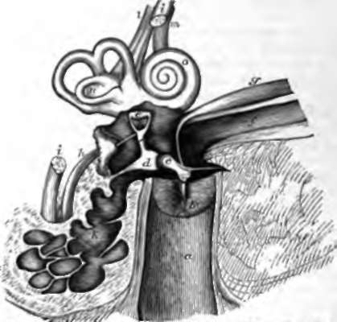

189. The External Ear
Description
This section is from the book "Animal Physiology: The Structure And Functions Of The Human Body", by John Cleland. Also available from Amazon: Animal Physiology, the Structure and Functions of the Human Body.
189. The External Ear
The External Ear consists of two parts, the pinna and the canal. The pinna, or that part which is understood when the ear is spoken of as a feature, presents various named inequalities of surface. The outer border, which extends round the back, and curves inwards in front, is called the helix; the elevation within it, forked at the upper part, is the antihelix; while the hollow at the bottom of which the canal is placed is called the cup or concha. The little elevation in front of the canal is called the tragus, the similar elevation behind is called the antitragus, and the pendulous part is the lobule. The pinna consists of a framework of cartilage covered with integument; but at the lower end of the helix, the cartilage comes to a point, and in the lobule there is nothing but a mass of firm adipose tissue. The lobule is sometimes absent, and is a human peculiarity, the beautifully rounded ears of monkeys having none. The pinna, in many animals, is obviously useful as an ear trumpet for gathering sonorous vibrations; but in man it is of comparatively little service, although it is provided with muscles which give it a slight degree of movement. One of these muscles passes from the parts in front, another from above, and a third from the mastoid process behind, to be attached near the root of the pinna; and they are named, respectively, the attrahens, attollens, and retrahens auriculam muscles. There are likewise various still smaller muscles which pass from one part of the pinna to another; thus, one bundle on the tragus, and another on the antitragus, pull these eminences very slightly downwards and apart; two slips are placed on the fore part of the helix, and the antihelix and its inferior branch are each crossed by short fibres on their cranial surface; but the only interest connected with these muscles is, that they represent more important structures in the lower animals. So also there is a little tubercle often present near the upper part of the margin of the helix, which is interesting as being the alleged representative, of the tip of the ear in animals which have the pinna pointed (Darwin).
The canal or external auditory meatus of the ear, about an inch and a quarter in length, is partially bounded in its outer part by cartilage, continuous with that of the pinna; but, more deeply, for more than half its length, has osseous walls, which belong to the temporal bone. The integument with which it is lined secretes cerumen from glands of a structure similar to sweat glands, and is furnished, towards the superficial extremity, with fine hairs inclined outwards, so as to offer an obstacle to the entrance of particles of dust. Additional protection is given by the direction of the canal, which is inclined slightly backwards at its commencement, under cover of the tragus, then turns a little forwards; and also in the outer half has an upward slope, which is suddenly changed for a downward inclination in the deep part.
Fig. 127. Diagram of the Right Ear. a, Osseous part of the canal of the external ear; b, membrana tympani with the upper part removed; c, malleus; d, incus; e, stapes with its base filling up the fenestra ovalis (the fenestra rotunda is seen a little lower); f, Eustachian tube; g, tensor tympani mnscle; h, stapedial muscle; i, i, portio dura of the seventh nerve divided; k, mastoid cells; l,m, vestibular and cochlear divisions of the portio mollis or auditory nerve; n, vestibule; o, cochlea.
The membrana tympani blocks up the inner end of the canal. It consists of a fibrous membrane with a thin covering of integument on the outside, and of mucous membrane within. Its fibrous part is attached to the bone round about, and has its principal fibres radiating from the lower end of a process of an ossicle in the tympanum, the handle of the malleus, which descends between the fibrous and mucous layers. The membrane is sloped so as to approach nearer the surface at its upper than its lower edge; and it is slightly concave on its outer side, being pulled inwards at the point where the malleus is attached.
Continue to:
- prev: 188. Hearing
- Table of Contents
- next: 190. The Middle Ear